|

STAR TREK IV:
THE VOYAGE HOME
1986
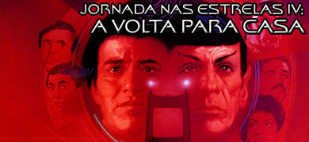

Sinopse
comentada
Comentrios
Citaes
Efeitos
Especiais
Trilha Sonora
Trivia
Ficha
Tcnica
O
DVD
Meus Amigos,
Estamos
em Casa...
Imagem
A qualidade de imagem exatamente a mesma encontrada no DVD simples lanado no ano passado.
O filme IV apresentado em widescreen anamrfico na proporo de 2.35:1. Sendo anamrfico, a imagem ganha mais linhas de resoluo e pode ser
vista em uma TV widescreen 16:9 com toda a qualidade que o formato DVD pode oferecer.
A imagem muito boa, porm sofre de uma perda de definio em algumas cenas e a saturao das cores um pouco excessiva, principalmente nas cenas iniciais no planeta Vulcano. A pelcula utilizada est boas condies, porm algumas poucas cenas possuem granulao acima da mdia (normalmente as cenas mais escuras).
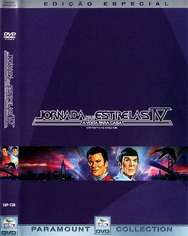
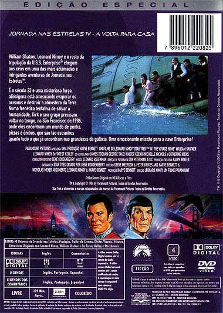
Som
O udio tambm exatamente igual ao encontrado na edio simples em DVD. Originalmente em simples stereo surround, foi remixado em Dolby Digital 5.1 e o resultado muito bom, embora pudesse ser melhor. Falta um pouco de agressividade em algumas cenas.
Como esse um filme mais calmo, sem muitas exploses ou tiros, e com menos cenas no espao, realmente no h muito que se exigir do som. Na maior parte do filme as caixas surround so usadas principalmente para efeitos de ambiente ao invs de efeitos tridimensionais; alm disso, o subwoofer trabalha muito pouco tambm.
Apenas est disponvel o udio original em ingls. As legendas so apresentadas em ingls, portugus e espanhol.
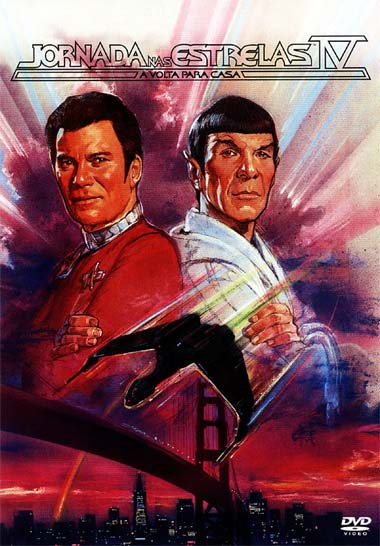
Extras
Jornada nas Estrelas: O Filme foi o primeiro da srie a receber tratamento super especial em DVD. Uma edio exemplar que praticamente esgota todas as reas de conhecimento sobre o filme e sua produo.
Infelizmente, as edies especiais em DVD dos filmes 2 e 3 no chegaram aos ps da qualidade do primeiro filme. Com extras que se resumiam a entrevistas chatas e mal gravadas (as infames talking heads cabeas falantes).
Diante a insatisfao dos consumidores, a Paramount tomou vergonha e resolveu caprichar de verdade na edio especial do quarto filme; e conseguiu, com relativo sucesso. Temos aqui uma excelente edio especial, no to maravilhosa como a do primeiro filme, mas muito melhor do que a dos filmes 2 e 3. O maior problema dessa edio faz parte da nova poltica da Paramount de produzir um documentrio para o filme e dividi-lo em vrias sees de poucos minutos espalhadas pelo DVD. Isso d a falsa sensao de inmeros extras, quando na verdade cada seo no chega a pouco mais de 10 minutos. Muitos importantes DVDs da Paramount receberam o mesmo tratamento, como O Crepsculo dos Deuses e Ladro de Casaca. Seria mais sensato deixar a maioria das sees reunidas em um nico documentrio, com diviso por captulos para rpido acesso pelo usurio.
Os menus de seleo nunca foram motivo de reclamao nos DVDs anteriores de Jornada e a excelente qualidade aqui mantida. O disco 1, que contm o filme, apresenta a sala de comando do Q.G. da Frota Estelar em So Francisco como Menu principal. O disco 2, que contm os extras, apresenta uma cena tridimensional da nave de rapina Klingon boiando na gua prxima Ponte Golden Gate.
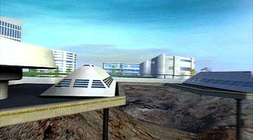
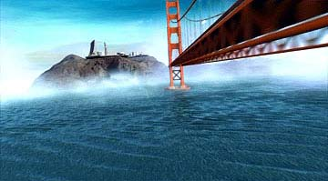
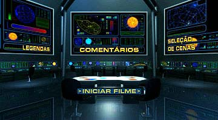
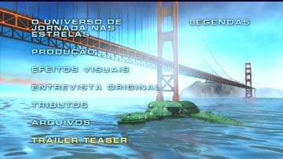
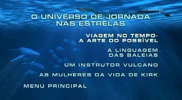
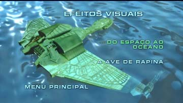
Vejamos agora os extras:
Comentrios em udio por William Shatner e Leonard Nimoy
Num momento histrico para os fs, os dois maiores astros da srie se unem pela primeira vez em uma trilha de udio de comentrios gravado especialmente para este
DVD. Os dois se tratam, devidamente, como velhos amigos relembrando os bons tempos. Pode no ser uma das melhores trilhas de comentrios j gravadas para um DVD, mas a reunio de Shatner e Nimoy j motivo mais do que suficiente para dar uma conferida.
Comentrios em texto por Michael Okuda
Aqui reside o tesouro dos fs mais apaixonados e meticulosos sobre o universo de
Jornada nas Estrelas. Esses comentrios so apresentados sob a forma de texto, substituindo as legendas do filme. primeira vista pode parecer enfadonho acompanhar o filme com tantas informaes jorrando na tela sob a forma de legendas, porm Okuda sempre bem humorado em seus textos e possui conhecimentos que no podem ser subestimados pelos fs.
O Universo de Jornada nas Estrelas
A Viagem no Tempo A Arte do Impossvel (11 min.)
Interessante, porm superficial, discusso sobre a possibilidade de viagem no tempo.
A Linguagem das Baleias (6 min.)
Igualmente superficial, ainda mais devido curtssima durao. A impresso que fica que a Paramount o incluiu apenas para constar que tratou do tema.
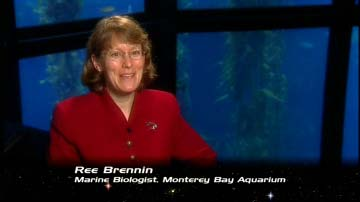
Um instrutor Vulcano (7 min.)
Colocaram uma mulher chata, expert em Vulcanos, recitando um texto chato sobre essa raa aliengena.
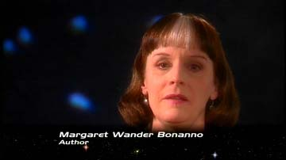
As Mulheres da Vida de Kirk (8 min.)
difcil descrever ao certo esse mini-documentrio. Temos trs relativamente idosas senhoras que trabalharam na Srie Clssica que passam os oito minutos elogiando as atribuies masculinas do William Shatner. Bizarro, porm engraado.
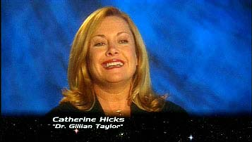
Produo
O Passado do Futuro (27 min)
o documentrio mais interessante, comentando sobre vrios aspectos da produo, inclusive com vdeos das filmagens.
Locaes (7 min)
Abrange trs seqncias do filme: Chekov e Uhura pedindo informaes aos pedestres sobre a localizao dos navios nucleares, as filmagens no porta-avies e a recriao de um parque aqutico.
Copies (4 min)
Interessante comparao entre diversas edies da cena de Kirk e cia atravessando a rua (aquela famosa cena em que Kirk quase atropelado).
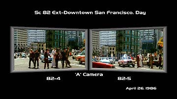
Criando os Efeitos Sonoros (11 min)
Aqui so explicados os desafios de criar efeitos sonoros, tanto os artificiais como a reproduo dos reais.
Efeitos Visuais
Do Espao ao Oceano (14 min)
Documentrio muito bom sobre os efeitos especiais, com nfase em maquetes, baleias mecnicas, tanques para as filmagens e outros do gnero.
A Ave de Rapina (3 min)
Pequeno, porm suficiente. Nimoy conta sobre vrios aspectos do design da nave
Klingon.
Entrevistas Originais (14, 15 e 13 min)
Trs sees com entrevistas individuais com William Shatner, Leonard Nimoy e DeForest
Kelley realizadas durante as filmagens. Consistem em perguntas bsicas sobre os respectivos personagens de cada ator, sem entrar no mrito do roteiro por motivos de sigilo durante as filmagens. Shatner parece bem mal humorado, pois Nimoy e Kelley conservam um ar de simpatia.
Tributos
As Anotaes de Roddenberry (8 min)
Temos o filho de Roddenberry, Eugene, comentando sobre a vida e obra de seu pai. Ele no parece muito vontade diante da cmera, mas o que tem a dizer certamente muito interessante para os fs que pouco conhecem sobre o criador da srie.
Mark Lenard (12 min)
As trs filhas de Lenard conversam sobre a vida e obra de seu pai. Nada mais apropriado para um bela homenagem.
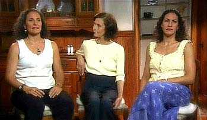
Arquivos
Fotos da Produo
Dezenas de fotos ordenadas em seqncia com msica do filme ao fundo. Seria mais interessante deixar em formato de acesso livre, mas, de qualquer forma, deve agradar a todos os gostos.
Storyboards
Mais de 150 storyboards das cenas mais importantes do filme.
Trailer
Sempre bem-vindo como relquia da poca em que passou nos cinemas. Nos anos 80 no havia internet para divulgar a produo do filme; portanto, ver o trailer era uma grata surpresa.